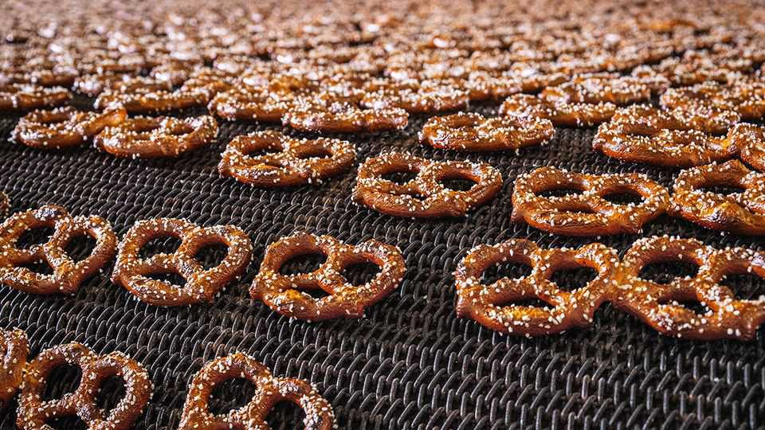

One thing America still excels at making? Pretzels
How Pennsylvania became a powerhouse in the production of the doughy snack

Aug 27th 2026
In the seventh century European monks began giving children twisted dough treats as rewards for learning their prayers. Thus was born the pretzel. (Purportedly the snack’s three holes represent the holy trinity.) It became especially popular in southern Germany, whose emigrants eventually took their favoured snack to America. Many congregated in Pennsylvania.
Today the state produces four-fifths of America’s pretzels, and exports many abroad as well. Even as snack sales have suffered from the rise of private labels and weight-loss drugs, pretzels have proved resilient. In the 12 months to mid-May Americans bought $2.9bn-worth of the crunchy treat, up by 2.6% from the previous year, according to Circana, a data provider. A dense cluster of bakeries is probably not what Donald Trump imagines when he speaks about reviving American manufacturing. Yet it represents a rare success for small, family-owned American factories.
The “pretzel belt” traces its origins to Pennsylvania’s status as a haven for members of persecuted religions. William Penn’s tolerant rule of the state he founded attracted European outcasts such as the Pennsylvania Dutch (who in fact spoke German). That cultural group, which includes members of religious sects like the Amish, brought pretzels and, in some cases, a knack for business. The Amish eschewed many modern technologies, but other Pennsylvania Dutch were eager inventors and adopters of tools such as the mechanised pretzel-maker and deep-fryer.
Pretzels are not the only snack in the production of which Pennsylvania plays an outsize role (the state is also home to Hershey, America’s biggest chocolatier). But they are the sphere it dominates most. The pretzel that caused George W. Bush to choke and briefly lose consciousness in 2002 was procured by the former president’s chef from his hometown of Lancaster, Pennsylvania. Some of the state’s better-known pretzel businesses, such as Auntie Anne’s, an eatery, have been acquired by national firms. But most remain locally owned.
Pretzels also help draw tourists to the state. At Julius Sturgis Pretzel Bakery in Lititz, another Pennsylvanian hamlet, customers drive from New York, New Jersey and Baltimore to tour local snack factories (as well as to catch glimpses of the Amish driving their horses-and-buggies). Such attractions have boosted Pennsylvania’s travel industry, which brought in $50bn of visitor spending in 2024, the latest year for which data are available. Licence plates from as far away as Quebec and Alaska can be glimpsed in the parking lot. In the cars’ boots, undoubtedly, lie boxes of pretzels. ■